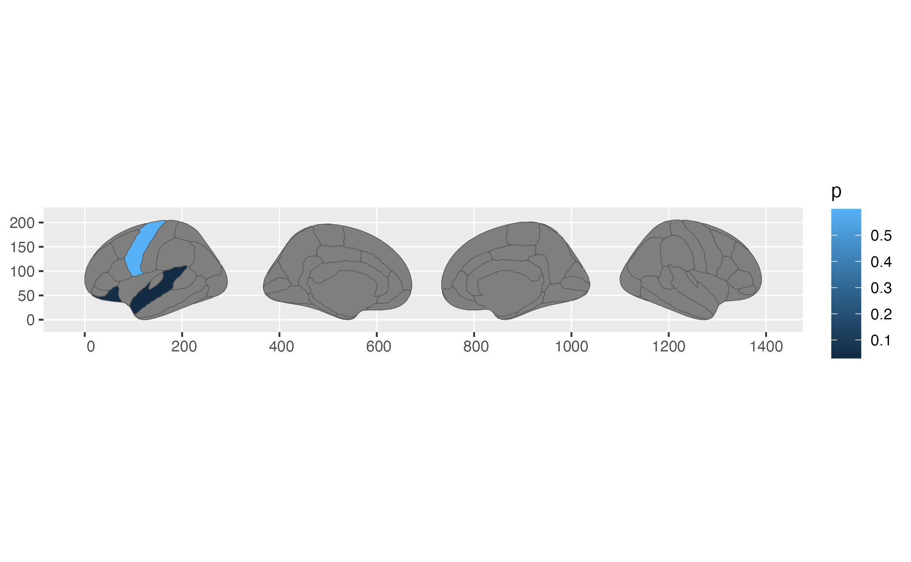
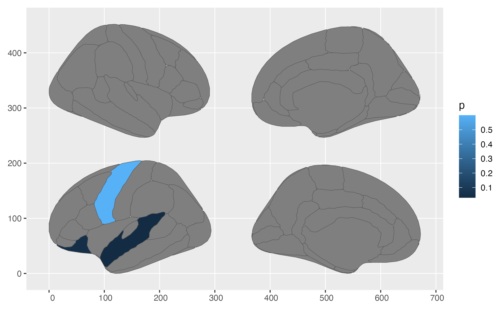
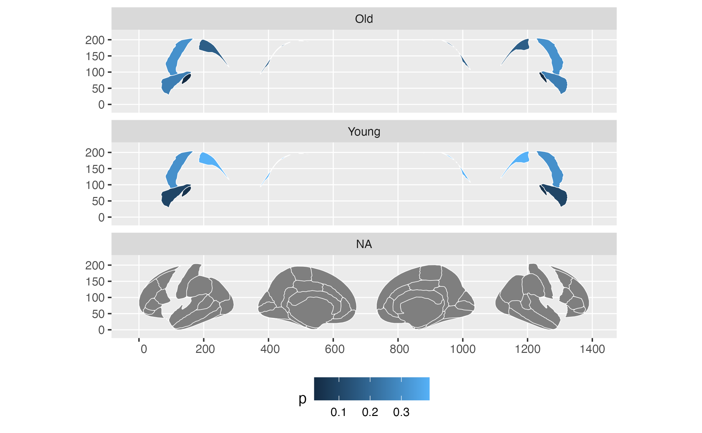
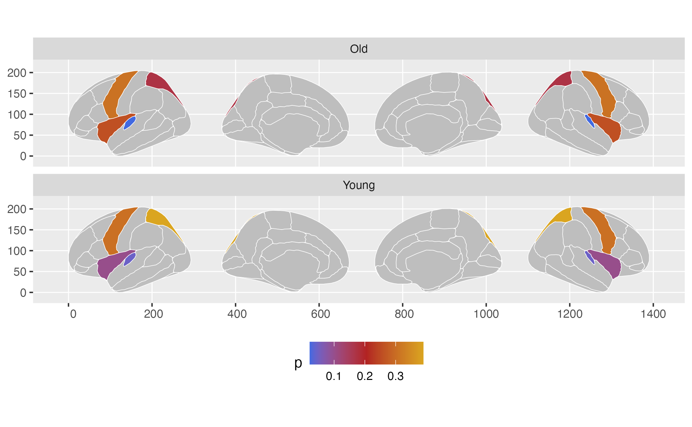

Introduction
Once you have covered the main functionality in ggseg you will want to use it to plot the results of your data. In order to do this, your data must adhere to certain specifications, so that ggseg can manage to merge your data with the atlas you are using. This means you need to be able to inspect and locate the way the regions you are working with are names in the internal atlas files. This vignette should provide the tools you need to figure these features out, and to manipulate your data to fit these requirements.
Inspecting the atlas labels
There are several ways you can inspect what the data in the atlas looks like. While each atlas has some small differences, they all share six main columns:
1. .long - x-axis
2. .lat - y-axis
3. .region - name of region/network
4. .hemi - hemisphere (left or right)
5. .side - side of view (medial, lateral, sagittal or axial)
Most atlases also have a label column, which are raw names assigned from the program run to segment/extract data. TO inspect the atlases, call them in the console.
## Loading required package: ggplot2##
## Attaching package: 'dplyr'## The following objects are masked from 'package:stats':
##
## filter, lag## The following objects are masked from 'package:base':
##
## intersect, setdiff, setequal, union## # dk cortical brain atlas
## regions: 35
## hemispheres: left, right
## side views: lateral, medial
## palette: yes
## use: ggplot() + geom_brain()
## ----
## hemi side region label roi
## <chr> <chr> <chr> <chr> <chr>
## 1 left lateral bankssts lh_bankssts 0002
## 2 left lateral caudal middle frontal lh_caudalmiddlefrontal 0004
## 3 left lateral fusiform lh_fusiform 0008
## 4 left lateral inferior parietal lh_inferiorparietal 0009
## 5 left lateral inferior temporal lh_inferiortemporal 0010
## 6 left lateral lateral occipital lh_lateraloccipital 0012
## 7 left lateral lateral orbitofrontal lh_lateralorbitofrontal 0013
## 8 left lateral middle temporal lh_middletemporal 0016
## 9 left lateral pars opercularis lh_parsopercularis 0019
## 10 left lateral pars orbitalis lh_parsorbitalis 0020
## # … with 76 more rowsFurther inspection of the atlas data can be explored by turning them into tibbles (or data.frames)
as_tibble(dk)## # A tibble: 90 × 8
## atlas type hemi side region label roi geometry
## <chr> <chr> <chr> <chr> <chr> <chr> <chr> <MULTIPOLYGON>
## 1 dk cortical left lateral NA NA 0001 (((84.32563 34.46407, 84…
## 2 dk cortical left lateral bankssts lh_b… 0002 (((214.8215 108.8139, 21…
## 3 dk cortical left lateral caudal mi… lh_c… 0004 (((106.16 184.3144, 93.6…
## 4 dk cortical left lateral fusiform lh_f… 0008 (((256.5481 48.35713, 24…
## 5 dk cortical left lateral inferior … lh_i… 0009 (((218.4373 161.6233, 21…
## 6 dk cortical left lateral inferior … lh_i… 0010 (((250.7745 70.75764, 24…
## 7 dk cortical left lateral lateral o… lh_l… 0012 (((277.4615 115.0523, 27…
## 8 dk cortical left lateral lateral o… lh_l… 0013 (((66.26648 69.56474, 56…
## 9 dk cortical left lateral middle te… lh_m… 0016 (((238.0128 91.25816, 23…
## 10 dk cortical left lateral pars oper… lh_p… 0019 (((79.03391 126.496, 74.…
## # … with 80 more rowsHere you can see information about the dk atlas, and the main attributes of this atlas. If you want to use external data with your ggseg plot, you will need to make sure that your data has at least one column corresponding in name and content with another in the atlas you are using.
Structuring data for merging
For instance, here we make some data for the “default” and “visual” networks in the dk atlas, and two p values for those two networks.
someData = tibble(
region=c("superior temporal","precentral", "lateral orbitofrontal"),
p=c(.03,.6, .05)
)
someData## # A tibble: 3 × 2
## region p
## <chr> <dbl>
## 1 superior temporal 0.03
## 2 precentral 0.6
## 3 lateral orbitofrontal 0.05Notice you we have spelled both the column name and the region names exactly as they appear in the data. This is necessary for the merging within the ggseg function to work properly. This merge can be attempted before supplying the data to ggseg to see if there are any errors.
## Joining, by = "region"## # A tibble: 90 × 9
## atlas type hemi side region label roi geometry p
## <chr> <chr> <chr> <chr> <chr> <chr> <chr> <MULTIPOLYGON> <dbl>
## 1 dk cortical left late… NA NA 0001 (((84.32563 34.46407, 84… NA
## 2 dk cortical left late… banks… lh_b… 0002 (((214.8215 108.8139, 21… NA
## 3 dk cortical left late… cauda… lh_c… 0004 (((106.16 184.3144, 93.6… NA
## 4 dk cortical left late… fusif… lh_f… 0008 (((256.5481 48.35713, 24… NA
## 5 dk cortical left late… infer… lh_i… 0009 (((218.4373 161.6233, 21… NA
## 6 dk cortical left late… infer… lh_i… 0010 (((250.7745 70.75764, 24… NA
## 7 dk cortical left late… later… lh_l… 0012 (((277.4615 115.0523, 27… NA
## 8 dk cortical left late… later… lh_l… 0013 (((66.26648 69.56474, 56… 0.05
## 9 dk cortical left late… middl… lh_m… 0016 (((238.0128 91.25816, 23… NA
## 10 dk cortical left late… pars … lh_p… 0019 (((79.03391 126.496, 74.… NA
## # … with 80 more rowsNo errors! Yes, the p column is seemingly full of NAs, but that is just because the top of the data is the somatomotor network, which we did not supply any p values for, so it has been populated with NAs. We can sort the data differently, so we can see the phas been added correctly.
## Joining, by = "region"## # A tibble: 90 × 9
## atlas type hemi side region label roi geometry p
## <chr> <chr> <chr> <chr> <chr> <chr> <chr> <MULTIPOLYGON> <dbl>
## 1 dk cortical left late… super… lh_s… 0031 (((207.634 112.8177, 195… 0.03
## 2 dk cortical right late… super… rh_s… 0031 (((1201.097 114.4479, 12… 0.03
## 3 dk cortical left late… later… lh_l… 0013 (((66.26648 69.56474, 56… 0.05
## 4 dk cortical left medi… later… lh_l… 0013 (((571.041 20.11423, 571… 0.05
## 5 dk cortical right medi… later… rh_l… 0013 (((770.9836 30.46747, 77… 0.05
## 6 dk cortical right late… later… rh_l… 0013 (((1321.97 75.4817, 1320… 0.05
## 7 dk cortical left late… prece… lh_p… 0025 (((157.1559 204.0537, 13… 0.6
## 8 dk cortical left medi… prece… lh_p… 0025 (((476.8878 196.7183, 48… 0.6
## 9 dk cortical right medi… prece… rh_p… 0025 (((923.7245 201.5463, 92… 0.6
## 10 dk cortical right late… prece… rh_p… 0025 (((1226.19 203.939, 1230… 0.6
## # … with 80 more rowsIf you need your data to be matched on several columns, the approach is the same. Add the column you want to match on, with the exact same name, and make sure it’s content matches the content of the same column in the data.
## # A tibble: 3 × 3
## region p hemi
## <chr> <dbl> <chr>
## 1 superior temporal 0.03 left
## 2 precentral 0.6 left
## 3 lateral orbitofrontal 0.05 left## Joining, by = c("hemi", "region")## # A tibble: 90 × 9
## atlas type hemi side region label roi geometry p
## <chr> <chr> <chr> <chr> <chr> <chr> <chr> <MULTIPOLYGON> <dbl>
## 1 dk cortical left late… super… lh_s… 0031 (((207.634 112.8177, 195… 0.03
## 2 dk cortical left late… later… lh_l… 0013 (((66.26648 69.56474, 56… 0.05
## 3 dk cortical left medi… later… lh_l… 0013 (((571.041 20.11423, 571… 0.05
## 4 dk cortical left late… prece… lh_p… 0025 (((157.1559 204.0537, 13… 0.6
## 5 dk cortical left medi… prece… lh_p… 0025 (((476.8878 196.7183, 48… 0.6
## 6 dk cortical left late… NA NA 0001 (((84.32563 34.46407, 84… NA
## 7 dk cortical left late… banks… lh_b… 0002 (((214.8215 108.8139, 21… NA
## 8 dk cortical left late… cauda… lh_c… 0004 (((106.16 184.3144, 93.6… NA
## 9 dk cortical left late… fusif… lh_f… 0008 (((256.5481 48.35713, 24… NA
## 10 dk cortical left late… infer… lh_i… 0009 (((218.4373 161.6233, 21… NA
## # … with 80 more rowsNotice how the message now states that it is joining by = c("region", "hemi"). The merge function has recognized that there are two equally named columns, and assumes (in this case correctly) that these are equivalent.
Notice that everything is case-sensitive, so writing Region or Left will not result in matching.
Providing data to ggseg
When you have managed to create data that merges nicely with the atlas, you can go ahead and supply it to the function.
ggplot(someData) +geom_brain( atlas=dk, mapping=aes(fill=p))## merging atlas and data by 'region', 'hemi'
You can actually also supply it directly as an atlas. For instance, if you had saved the merged data from the previous steps, you can supply this directly to the atlas option.
## Joining, by = c("hemi", "region")
ggplot() +
geom_brain(atlas = newAtlas,
mapping = aes(fill=p),
position = position_brain(hemi ~ side)
)
It is this possibility of supplying a custom atlas that gives you particular flexibility, though a little tricky to begin with. Lets do a recap of the unwanted results:
someData = data.frame(
region = rep(c("transverse temporal", "insula",
"precentral","superior parietal"),2),
p = sample(seq(0,.5,.001), 8),
AgeG = c(rep("Young",4), rep("Old",4)),
stringsAsFactors = FALSE)
ggplot(someData) +
geom_brain(atlas = dk,
colour="white",
mapping=aes(fill=p)) +
facet_wrap(~AgeG, ncol=1) +
theme(legend.position = "bottom")## merging atlas and data by 'region'
See how you have three facets, when you only have 2 groups, and that the “background” brain is not printed in your two groups. This is because for ggplot, that is what the data looks like. For this to work, you can supply already grouped data to ggseg, but you must make sure they are grouped by the columns you will use for faceting, or else it will not work.
# If you group_by the columns you will facet by, this will work well.
someData = someData %>%
group_by(AgeG)
# We can now supply the newAtlas as an atlas to ggseg
ggplot(someData) +
geom_brain(atlas=dk,
colour="white",
mapping=aes(fill=p)) +
facet_wrap(~AgeG, ncol=1) +
theme(legend.position = "bottom") +
scale_fill_gradientn(colours = c("royalblue","firebrick","goldenrod"),na.value="grey")## merging atlas and data by 'region'
This whole procedure can be piped together, so you don’t have to save all the intermediate steps.
someData %>%
group_by(AgeG) %>%
ggplot() +
geom_brain(atlas=dk,
colour="white",
mapping=aes(fill=p)) +
facet_wrap(~AgeG, ncol=1) +
theme(legend.position = "bottom") +
scale_fill_gradientn(colours = c("royalblue","firebrick","goldenrod"),na.value="grey")## merging atlas and data by 'region'